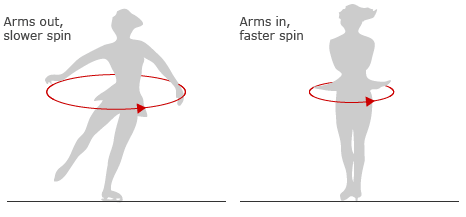

Extend Yourself - K'NEX: Design and Test a Spinning Top
 The Spinning Top Extra Challenge
The Spinning Top Extra Challenge
Were you able to design a top that span for 15 seconds? Is it possible to build a K'NEX top that spins for 30 seconds? Give it a try and see how close you get! One way to start your top spinning is with a flick of your thumb and forefinger. What are some other ways? Can you think of ways that will make your top spin even longer?
Principles of Physics
Another principle of physics states that energy cannot be created or destroyed; it can only be converted to another type of energy, or transferred to another object. Where did the energy come from that you transferred to the top when you started spinning it? Where did it go?
Conservation of angular momentum explains why skaters spin faster when they bring their arms closer to their bodies. Go online to learn more.

More About Tops
How is a Yo-Yo like a top? How is it different? What about a hula-hoop? Tops have been used as toys for thousands of years. Go online to learn more about their history. What are some world records for spinning tops?
Place Value
Research the record for the world’s longest top spin at this website. Convert the time to seconds (remember, there are 60 seconds in a minute, and 60 minutes in an hour!). Write the number in seconds in base-ten numeral, number name, and expanded form. Using place value, analyze how much larger the world’s longest top spin was than your top spin. Line up the place values. Determine which number is larger.